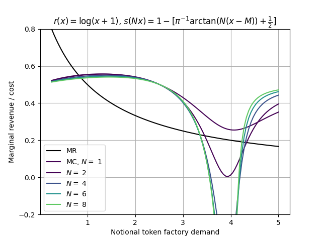
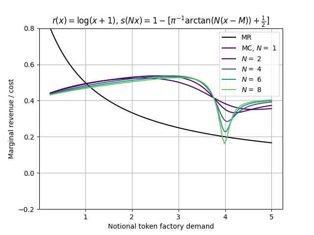
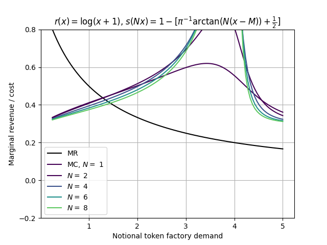
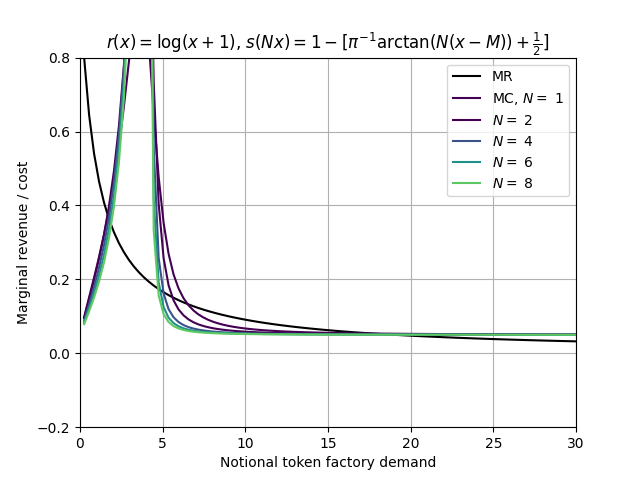

The reporting around “tokenmaxxing” – seemingly nonsensical and wasteful usage of token budgets for centrally hosted transformer-based model workflows – is comical. When I’m in a bad mood or haven’t had enough coffee (same thing?) I think that tokenmaxxing is deranged behavior that is, at best, a really great demonstration of market-wide irrational exuberance. However, there are two cases in which tokenmaxxing is a rational behavior on the part of the maxxers (it’s a word now), and neither of them is a good sign for the health of the transformer-based AI economy.
In what follows I’ll write both “AI firms” and just “firms”. “AI firms” are companies that make money by selling centrally hosted transformer-based AI as a service. I might also call them “token factories” because I want to cosplay as a tech bro who has no concept of how hard it is to profitably manufacture a physical good. I’ll use “firms” are everyone who wants to make API calls to AI firms’ models.
Everyone wants to look “AI forward”, right? Right. You gotta spend tokens to look “AI forward”. Okay, fine. How many tokens should we spend? It depends on how many tokens everyone else is spending. Whoops.
To be more formal about it, suppose that there are N firms “deploying AI” and spending tokens to get outputs from it. Each of the n = 1, ..., N firms spends tn on tokens. Let Tn = ∑m ≠ ntm. The n-th firm should spend more than some threshold value τ(Tn) to be seen as “AI-forward”, for which they expect to receive a reward v. If they don’t spend more than that, they expect they’ll receive nothing. The simplest sensible form of τ is τ(Tn) = a + bTn, where we can interpret a > 0 as “table stakes” and 0 < b < 1 as the complementarity of other firms’ spending (i.e., how much stronger their spending makes the requirement for firm n to raise its spending too). In this model, it’s clear that the best response function for firm n is to spend exactly τ(Tn) on tokens whenever τ(tn) < v and exit the marketplace otherwise. The equilibrium condition is therefore t* = a + b(N − 1)t* (because Tn = ∑m ≠ ntm = ∑m ≠ nt* = (N − 1)t*), which gives
$$
t^* = \frac{a}{1 - b(N-1)} \tag{1}
$$
as the equilibrium token spending amount. Not only does t* increase with N – i.e., there’s a token-spending arms race – but there’s a finite-N blowup as $N\rightarrow \frac{1}{b}+1$ from the left. The economic interpretation of this limit is that, with enough firms entering the signalling game, there is no rational upper bound of the number of tokens that a firm must spend to stay ahead.
Case 1 is pretty classic market-bubble dynamics – it’s rational to keep playing the game even though the aggregate outcome is poor (or, said differently, there’s a first-mover disadvantaged for leaving the party). If an oracle told us that this were the true rational behind tokenmaxxing, we wouldn’t have learned too much new about the structure of the market but we’d at least be able to comfort ourselves that tech executives are, in a perverse way, behaving rationally.
Case 2 is a (in my opinion) much more interesting possibility: tokenmaxxing reveals tech executives’ justified belief that centrally hosted transformer-based model workflows are fundamentally not financially sustainable, even though they do create value for firms at current heavily subsidized price levels. The intuition is this: “because centrally hosted transformer-based model workflows aren’t financially sustainable and will eventually cease to exist, my company should get as much ‘work’ done using them as possible,” except every other company is also thinking that at the same time, which reduces the amount of time until those workflows cease to exist. Whoops.
This case is more complicated and the theoretical justification for it is, in my opinion, more dubious than that for Case 1. (I will discuss this more in the conclusion.) Still, let’s see what happens. There are N firms demanding tokens, which we denote as x, from the token factory sector (I.e., the aggregate of AI firms). Firm n has a revenue structure given by r(xn) and linear costs cxn. Their objective is to maximize their long-term expected profit, $\max_{x_n} E[\sum_{t=0}^T\delta^t r(x_{n,t}) - c x_{n,t})]$, where 0 ≤ δ ≤ 1 is firm n’s discount factor. The upper limit of the sum T is a random variable denoting the amount of time left until the AI firms / token factory sector goes bankrupt or otherwise ceases operating. (We know that T < ∞ because AI firms are wildly unprofitable with no realistic chance of ever becoming profitable.) We suppose that T is governed by a Markov assumption: the probability that the AI sector survives into the next period is given by a decreasing function of the total demand for its services (again, because increased demand for its services results in increasing negative cash flow). Mathematically, the probability of the AI sector surviving to the next period, s = s(X) = s(∑mxm), satisfies s(0) = 1 and limX → ∞s(X) = 1. The firm does what comes naturally and solves a Bellman equation for the optimal demand:
$$
V_n = \max_{x_n}\{ r(x_n) - cx_n + \delta s(X) V_n\} \tag{2},
$$
where again we set X = ∑mxm. The Nash equilibria of this game, if they exist, are found through simultaneous solution of all N Bellman equations and corresponding N best response functions, which is completely intractable and also wildly unrealistic. Something that’s still unrealistic but less so is to assume that firm n solves for a symmetric Markov perfect equilibrium (SMPE) of this game, reasoning that each other firm that’s “large enough to matter” in the bankrupting of the AI firms will have roughly the same reasoning and exhibit roughly the same revenue and cost dynamics as firm n. (Preparing for incoming hate mail from the assumption police.) The SMPE assumption means we have to solve only one Bellman equation:,
$$
V = \max_{x}\{ r(x) - c x + \delta s(Nx)V\} \tag{3},
$$
where we wrote X = ∑mxm = ∑mx = Nx in the SMPE optimum. There are two derived quantities of interest: the first order conditions,
$$
r'(x) - c + \delta s'(Nx)V = 0 \tag{4},
$$
and the evaluated value function at the optimum:
$$
V(x) = \frac{r(x) - cx}{1 - \delta s(Nx)}. \tag{5}
$$
Substituting Eq. (5) into Eq. (4), the optima are the solutions of the nonlinear equation
$$
MR \equiv r'(x) = c - \delta s'(Nx)\frac{r(x) - cx}{1 - \delta s(Nx)} \equiv MC. \tag{6}
$$
In general this equation is impossible to solve analytically. We refer to the left-hand side as the marginal revenue (MR) and the right-hand side as the marginal cost (MC), which is a sum of the marginal private cost c and the shadow future cost of additional demand for tokens today. Numerical solution is easy and I’ll show some of those results below. The takeaway is this:
c = 0.5, d = 0.99

c = 0.415, d = 0.99

c = 0.3, d = 0.99

c = 0.05, d = 0.99

(Note the change in horizontal axis scale in the fourth figure; the third equilibrium is much, much larger than in the other scenarios with three equilibria. This is caused, however, essentially by the very low marginal private cost, not by the tokenmaxxing phenomenon.)
In these numerical solutions, I used a typical sigmoid function as the survival probability – $s(Nx) = 1-(\frac{1}{\pi} \arctan(N(x-M))+ \frac{1}{2})$ and assumed logarithmic revenue, r(x) = log (1 + x). The change in curvature is due to the interaction between the gradient of the survival probability – which is a bell-shaped function if the survival probability has a sigmoid shape – and the marginal cost. I caution the reader that I haven’t done a thorough analysis of Eq. 6 and it’s very likely that the properties of the solutions I described change, perhaps even qualitatively, depending on choices of r(x) and s(x). (For example, try seeing what happens if you assume linear revenue, r(x) = ax…)
Is Case 2 plausible? Maybe. I had to make many assumptions and, more fundamentally, there was much more complication in the analysis and in the result. In general we seek to minimize the complication of an explanation of a phenomenon. In contrast with Case 2, Case 1 is simple – simple analysis, simple results – and comports fairly well with reality (or at least, a narrative description of reality). But, either way, in short – yes, there are possible rational explanations for tokenmaxxing, and no, neither of them are a good sign of the health of AI firms or the industry writ large.